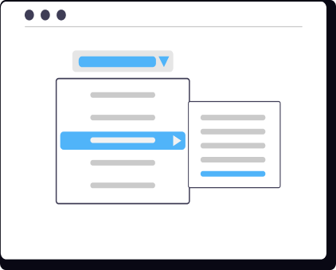

Stack
Stack adalah struktur data yang menggunakan pengurutan LIFO (Last-In-First-Out) yang artinya element yang terakhir masuk akan menjadi elemen yang pertama keluar. Seperti halnya tumpukan sebuah buku, dimana buku yang terakhir ditumpuk (top) akan menjadi buku yang pertama kali dikeluarkan. Ada beberapa operasi dasar dalam stack antara lain :
- •Push : menambahkan data pada puncak stack
- •Pop : menghapus data pada puncak stack
- •Top/Peek : untuk mengetahui data paling atas pada stack
- •isEmpty : untuk mengetahui apakah stack kosong atau tidak
- •Size : untuk mengetahui jumlah data di dalam stack


Sebagai gambaran praktis, bayangkan kita memiliki tiga buah buku dengan urutan tertentu, yaitu Buku Sejarah, Buku IPA, dan Buku Matematika. Ketika ketiga buku ini dimasukkan (push) secara berurutan ke dalam sebuah stack, maka Buku Matematika akan menjadi buku yang berada di posisi paling atas (top).
Berdasarkan gambar kode pemrograman di samping, berikut adalah bagaimana fungsi dan operasi dasar stack dijalankan secara praktis:
- Pop: Menghapus atau mengambil elemen yang berada di posisi paling atas, yang mana elemen tersebut adalah Buku Matematika.
- Top/Peek: Melihat nilai elemen teratas tanpa menghapusnya, elemen tersebut adalah Buku Matematika.
- Pemeriksaan: Mengecek kondisi tumpukan apakah sedang kosong (isEmpty) atau melihat total data (size).
Video Tutorial
Masih bingung dengan Stack?
Pelajari konsep dasar Stack secara visual melalui video tutorial ini. Kamu akan melihat simulasi langsung bagaimana data ditambahkan, diakses, dan dihapus langkah demi langkah.